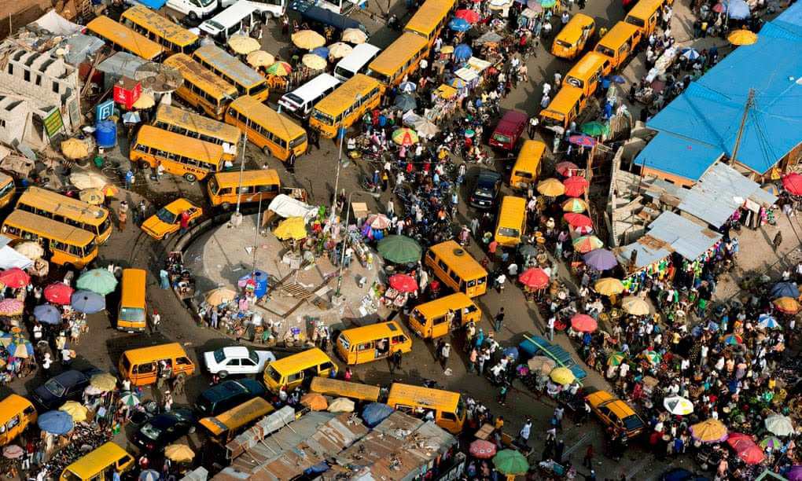
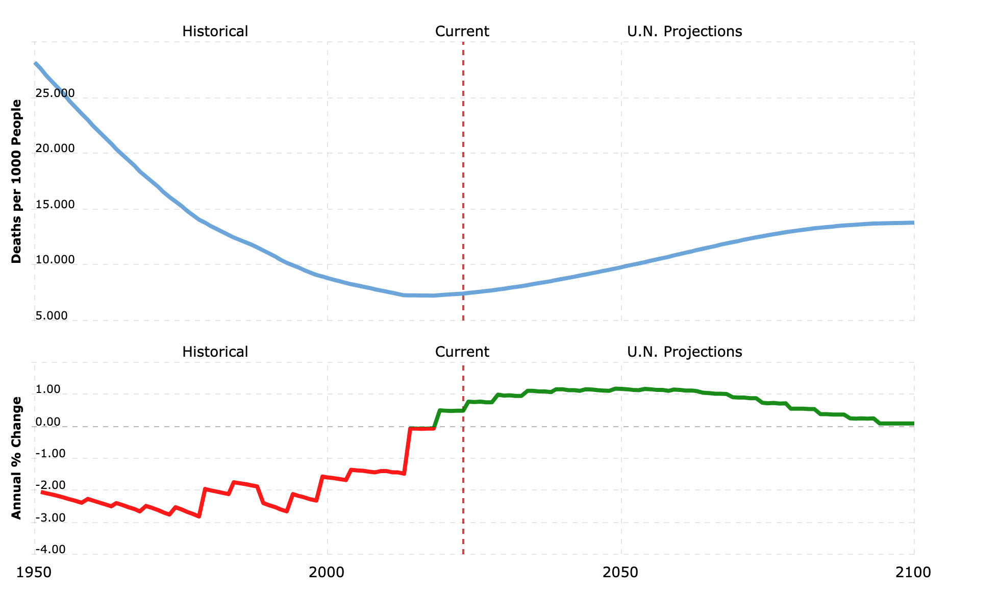
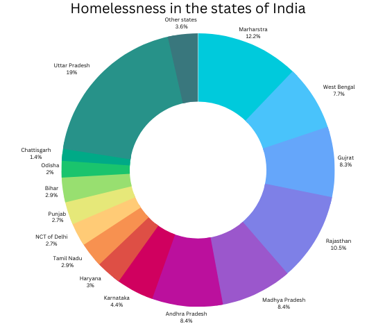

Overpopulation in India
Overpopulation is a phemonon where the population of a area is greater than the ecological capacity. This means that the population of a certain place has more population than its resources can support.
Causes of over populaton.
Firstly, a key factor is the lack of education. Insufficient access to education significantly hinders the dissemination of knowledge on effective family planning methods. Without education, individuals and communities do not possess the necessary information to make informed decisions about reproductive health. This knowledge deficit perpetuates a cycle of high population growth, as individuals are unaware of the benefits of smaller family sizes for their own well-being and the overall development of society.

To address this issue, it is imperative to prioritize educational initiatives that focus on reproductive health and family planning. By providing comprehensive and age-appropriate sexual education, societies can equip individuals with the knowledge and skills needed to plan their families effectively. These programs should emphasize the importance of contraceptives, safe pregnancy practices, sexually transmitted infection prevention, and the benefits of spacing out births for maternal and child health. Additionally, incorporating gender equality and women's empowerment in educational curricula can help break down social and cultural barriers that hinder family planning efforts.
Secondly, a higher mortality rate results in more children being born to ensure some survive into adulthood. In societies where child mortality rates are high, families may opt to have more children as a survival strategy. This phenomenon, known as the "replacement effect," occurs when parents have more children to compensate for the loss of those who do not survive.
To address this issue, it is crucial to improve healthcare systems, particularly in resource-limited areas where child mortality rates are the highest. Enhanced access to quality healthcare services, including maternal and child care, immunizations, and disease prevention programs, can significantly reduce child mortality rates. Moreover, implementing social welfare policies that provide economic and social support for families can alleviate the pressure to have more children as a safety net.
Additionally, promoting awareness about the importance of child survival and the available medical interventions can empower parents to make informed choices about family size. This can be achieved through community-based interventions such as outreach programs, educational campaigns, and support networks.
In conclusion, addressing the lack of education and high mortality rate are crucial steps to facilitating effective family planning. By providing comprehensive sexual education, increasing access to healthcare services, and promoting awareness about child survival, societies can overcome these challenges and pave the way for a better future. Empowering individuals with knowledge, access, and support is essential in helping them make informed decisions about family planning, leading to healthier and more sustainable populations worldwide.
Effects of overpopulation
Effects of overpopulation in India: Increased demand over space and housing resulting in more people living homeless and on the streets. Extensive weight on that nation’s food supply and water resources has become a concerning issue. As India grapples with the challenges posed by its booming population, the strain on infrastructure and basic amenities has become increasingly apparent, affecting the lives of millions. One of the foremost consequences of overpopulation is the severe shortage of affordable housing. Rapid urbanization and population growth have led to a scarcity of living space, pushing many individuals into slums and makeshift shelters. Homelessness has become a distressing reality for a significant portion of the population, particularly in urban areas. The lack of adequate housing not only compromises people's quality of life but also poses serious public health risks.

Additionally, overpopulation intensifies the strain on India's water resources. Growing water demand for domestic, industrial, and agricultural purposes has strained the country's freshwater reserves to their limits. Many regions face water scarcity, exacerbating the challenges of sanitation and hygiene. Insufficient access to clean water jeopardizes public health, contributing to the spread of waterborne diseases and creating a vicious cycle of health problems.
In conclusion, the effects of overpopulation in India are profound and wide-ranging. Increased demand for space and housing, the strain on the food supply, and the depletion of water resources pose significant challenges for the nation. Addressing these issues requires a multifaceted approach that combines effective policies, public awareness, and sustainable development strategies. It is crucial for India to find innovative ways to manage its growing population to ensure a prosperous and sustainable future for all its citizens.
Solutions to the overpopulation crisis
Managing the human population is a complex issue that requires a multifaceted approach. Various strategies have been implemented to address population growth and its associated challenges.
Increased access to contraception is one key aspect of population management. By providing individuals with the means to plan and space their pregnancies, contraception helps to control fertility rates and reduce the number of unintended pregnancies.
Wealth redistribution is another approach to population management. Economic inequality often exacerbates population challenges, as impoverished communities may lack access to education, healthcare, and family planning resources. By implementing policies that aim to reduce wealth disparities, governments can help ensure that all individuals have equal opportunities and access to resources for family planning.

Additionally, one-child policies have been implemented in certain countries to control population growth. These policies restrict families to having only one child, often through incentives or penalties. While controversial, these policies have been effective in countries like China, where they contributed to a significant decline in population growth. However, they also raise ethical concerns and have led to unintended consequences, such as gender imbalances and an aging population.
It is important to note that managing population growth should not be viewed solely as a means of controlling numbers. Sustainable development goals should also prioritize improving access to education, healthcare, and resources for all individuals, regardless of population size. By addressing socio-economic factors and providing comprehensive reproductive health services, countries can work towards achieving a balance between population management and human well-being .
In conclusion, managing the human population requires a comprehensive approach that includes increased access to contraception, family planning programs, wealth redistribution, and careful consideration of one-child policies. These strategies aim to empower individuals to make informed decisions about their reproductive health, reduce fertility rates, and address socio-economic inequalities. While population growth may no longer be viewed as a global crisis, it remains a concern in many developing nations. Therefore, effective population management measures are still needed to ensure sustainable development and improve the well-being of individuals worldwide.